Android Stuidioを使ってAndroidプロジェクトを作成する
Andrdoi Studioを使ってAndroidプロジェクトを作成する方法について解説します。
プロジェクトの基本情報を設定する
Andrdoi Studioを起動してください。
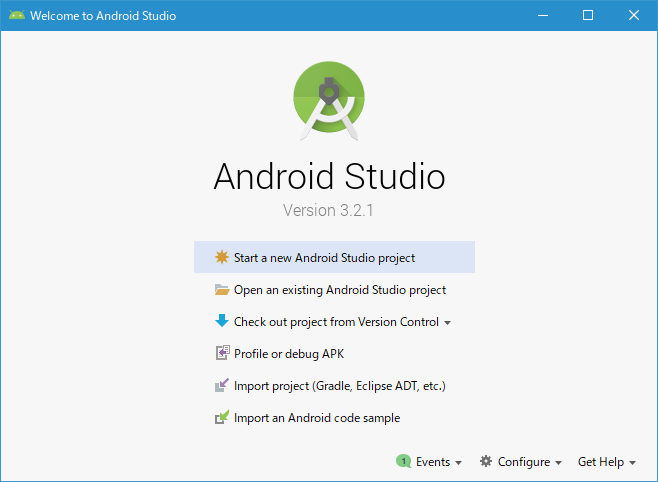
「Start a new Android Studio project」をクリックしてください。プロジェクトを作成するためのウィザードが開始されます。
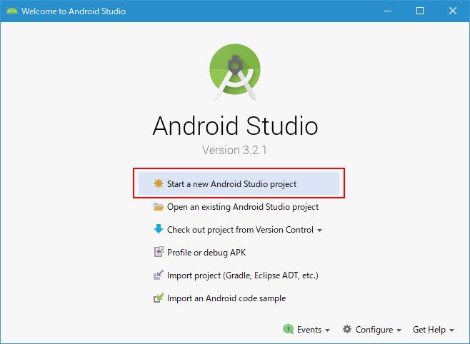
最初にプロジェクトの基本情報を設定する画面が表示されます。
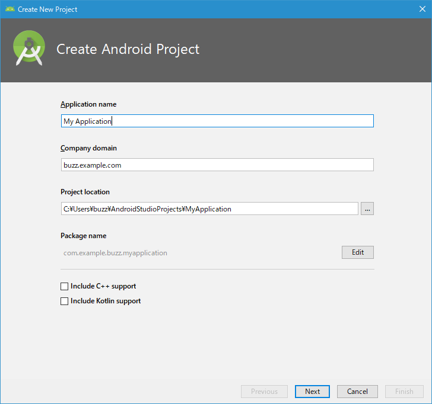
「Application name」には作成するプロジェクトの名前を入力します。
「Company domain」にはご自身の会社のドメイン名を入力します。Javaアプリではパッケージ名を設定することになっていますが、パッケージ名は世界中で開発されているほかのアプリのパッケージ名とかぶらないように名前を付ける必要があります。他とかぶらない名前を付ける方法として、自分たちが使用しているドメイン名を使うことが慣例になっています(ドメイン名は世界中で他とかぶらない文字列のため)。外部に公開する予定のないアプリであれば初期値のままでも構いません。
「Project location」は作成したプロジェクトが実際に設置されるフォルダです。今回は初期値のままですが、変更する場合は任意のフォルダを直接入力してください。
「Include C++ support」「Include Kotlin support」については、作成するプロジェクトでC++やKotlinを使用する場合はチェックをしてください。
今回は次のように入力しました。入力が終わりましたら「Next」をクリックしてください。
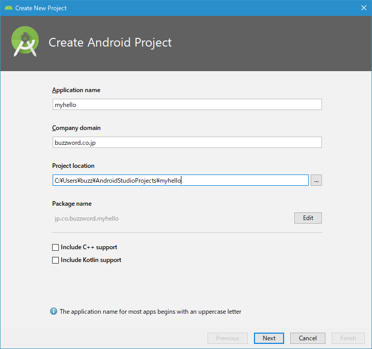
対象デバイスと動作する最小Android APIレベルを選択する
続いてプロジェクトで作成するアプリが対象とするデバイスを選択する画面が表示されます。
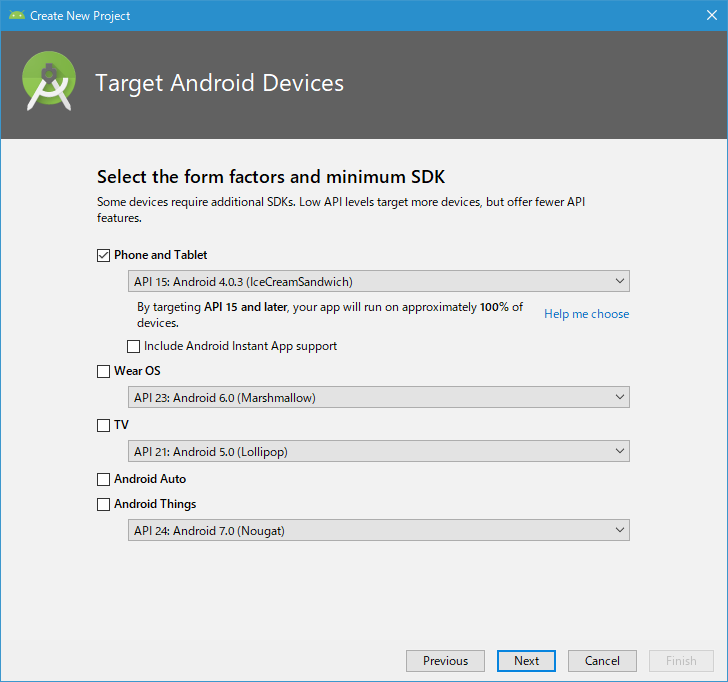
スマホやタブレットだけが対象であれば「Phone and Tablet」にだけチェックをしてください。例えばAndroid TVなでで使用するアプリを作成する場合は「TV」にチェックをするなど必要に応じてデバイスにチェックをしてください。
また作成するアプリがどのAndroid のAPIレベルであれば動作するのかについて最小のAPIレベルを選択します。以前のAPIを設定すれば、より多くのAndroidデバイスでアプリが動作しますが、新しいAPIで用意されている機能に制限がでます。
現在どのAPIがどの程度利用されているかどうかを確認すは「Help me choose」をクリックしてください。
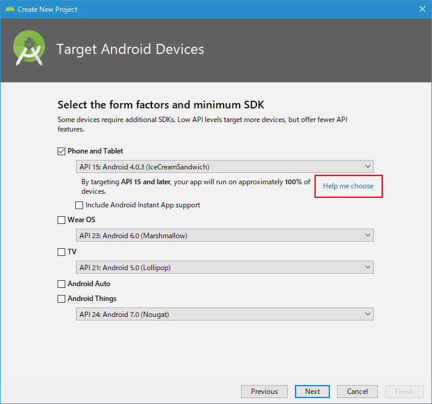
Anroid APIごとの現在の普及率などが確認できます。
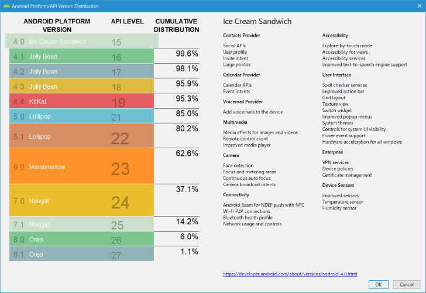
今回はテスト用なので「API 27 :Android 8.1(Oreo)」を選択しました。
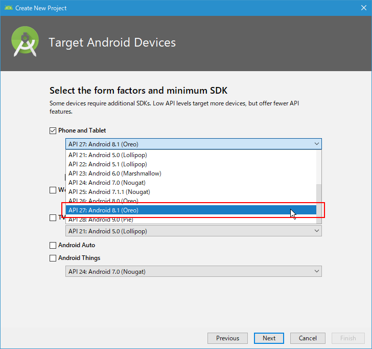
「Include Android Instant App support」というのは、インストールすることなくアプリが実行できるようにする機能を利用するかどうかです。今回はチェックしません。
設定が終わりましたら「Next」をクリックしてください。
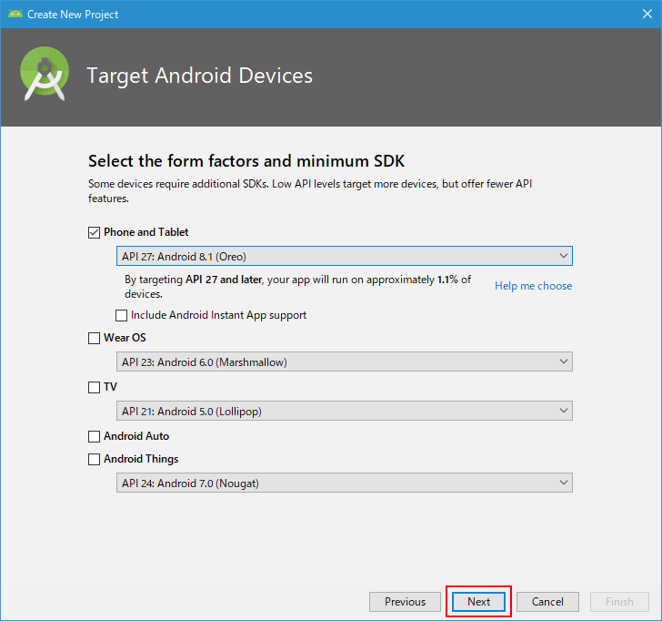
使用するテンプレートを選択する
続いて作成するプロジェクトのテンプレートを選択する画面が表示されます。使用するテンプレートをクリックして選択してください。
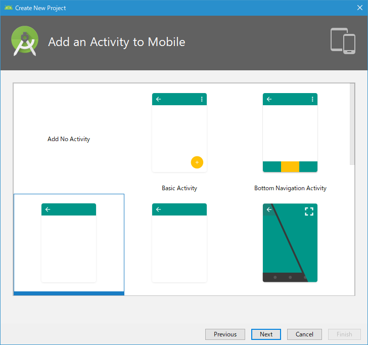
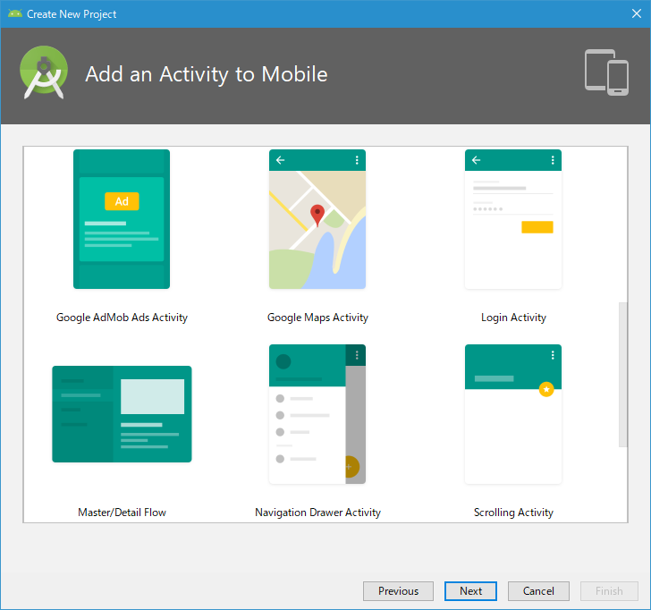
選択したテンプレートに応じて最初からソースコードに記述が行われます。例えば「Google AdMob Ads Activity」はモバイル用の広告であるAdMobを使用するアプリを作成する場合などに利用します。あくまで最初にどこまで自動でソースコードを用意するかどうかなので、どのテンプレートを選択してもソースコードを編集することでどんなアプリでも作成することができます。
今回はデフォルトで選択されている「Empty Activity」を選択しました。選択が終わりましたら「Next」をクリックしてください。
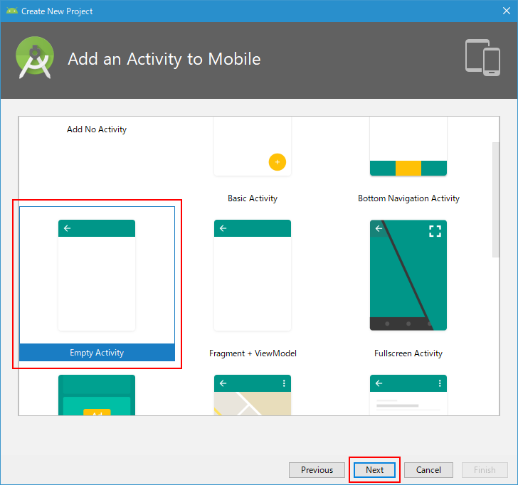
アクティビティのクラス名とレイアウトファイルの名前を設定する
最後に「Activity Name」と「Layout Name」の名前を設定する画面が表示されます。(テンプレートとしてEmpty Activityを選択した場合です)。
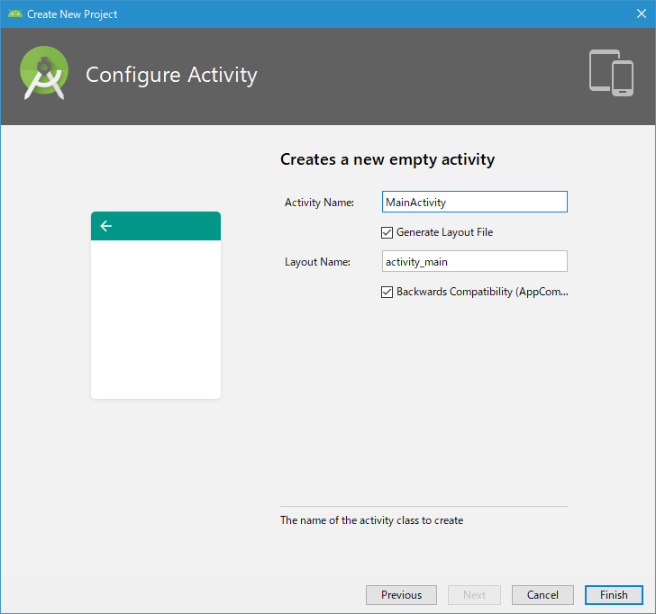
通常アプリでは複数の画面が使われます。アクティビティとアプリの画面について記述されたJavaのクラスです。1つの画面に対して1つのアクティビティが作成されます。またアクティビティの画面構成はレイアウトファイルと呼ばれるものにXMLファイルに記述します。ここでは最初の画面のアクティビティのクラス名とそのアクティビティで使用されるレイアウトファイルの名前を設定します。
「Activity Name」には最初のアクティビティのクラス名、「Layout Name」にはレイアウトファイルのファイル名を指定します。今回は変更をしませんでした。設定が終わりましたら「Finish」をクリックしてください。
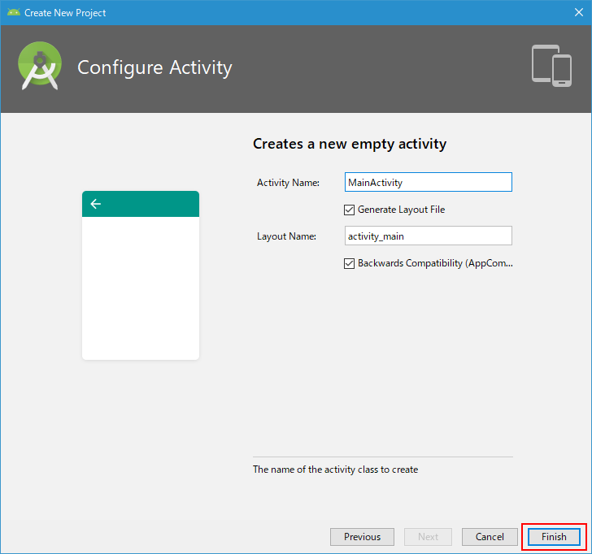
-- --
プロジェクトの作成が開始されます。プロジェクトの作成が完了すると次のような画面が表示されます。
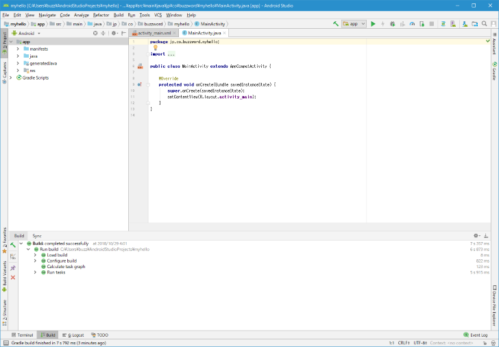
これでプロジェクトの作成は完了です。
( Written by Tatsuo Ikura )

著者 / TATSUO IKURA
初心者～中級者の方を対象としたプログラミング方法や開発環境の構築の解説を行うサイトの運営を行っています。